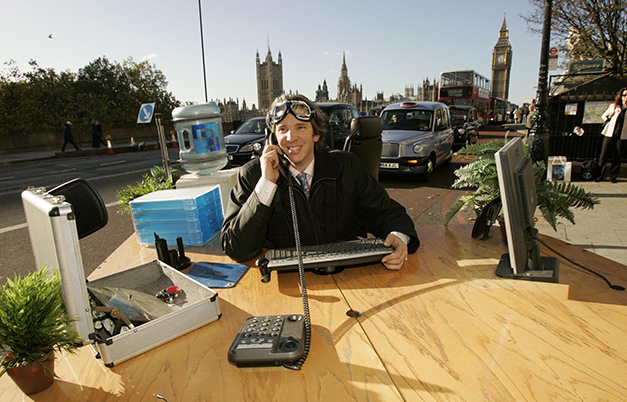
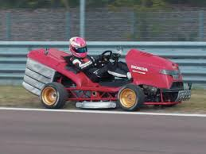
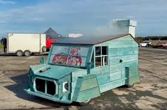

Edd China holds the official Guinness World Record for the fastest motorised office, reaching a staggering 87 mph (140 km/h).The British engineer and television presenter achieved this bizarre feat on 9 November 2006 on Westminster Bridge in London. Dubbed the "Hot Desk," the fully drivable workspace was constructed over a Rover 100 drivetrain and features a functional desk, an office chair, a computer, a working water cooler, and even a mapping system. China is world-renowned for his street-legal eccentricities, having also clinched records for the world's fastest motorised sofa, bed, and bathroom

Antony Edwards set the official Guinness World Record for the fastest lawnmower, reaching a blistering speed of 143.193 mph (230.446 km/h).The British mechanical engineer achieved this extreme garden-machinery milestone on 22 August 2021 at Elvington Airfield in York, UK. Affectionately nicknamed the "Mowabusa," Edwards spent two years and roughly £30,000 (around $41,000 USD) designing and constructing the machine from scratch in his home workshop.

Brian Cade claimed the official Guinness World Record for the fastest garden shed after driving "Ed the Shed" to a top speed of 123.43 mph (198.65 km/h).The British builder and self-described "petrolhead" achieved this bizarre speed milestone on 11 October 2025 at Elvington Airfield in York, UK. Growing up as a dedicated fan of the classic television show Record Breakers, Cade wanted to combine his professional trade as a builder with his lifelong passion for classic cars.